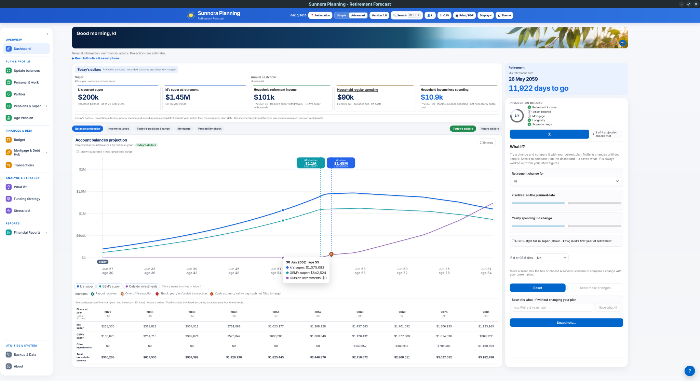
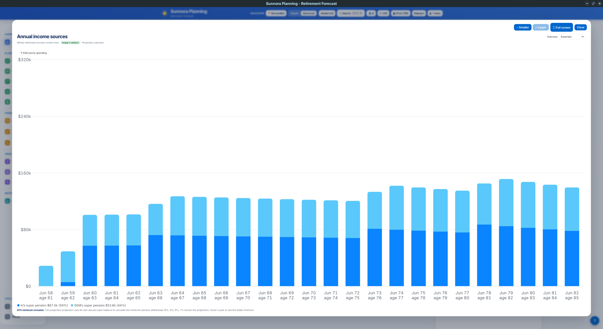
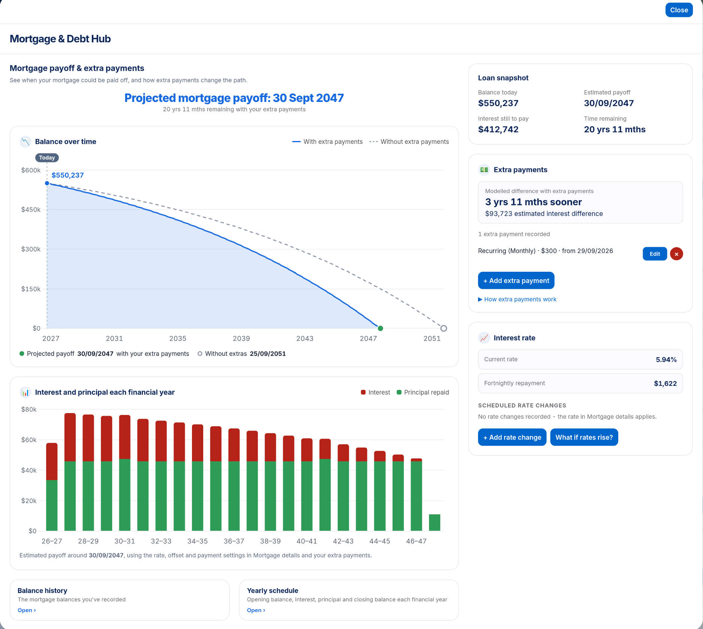
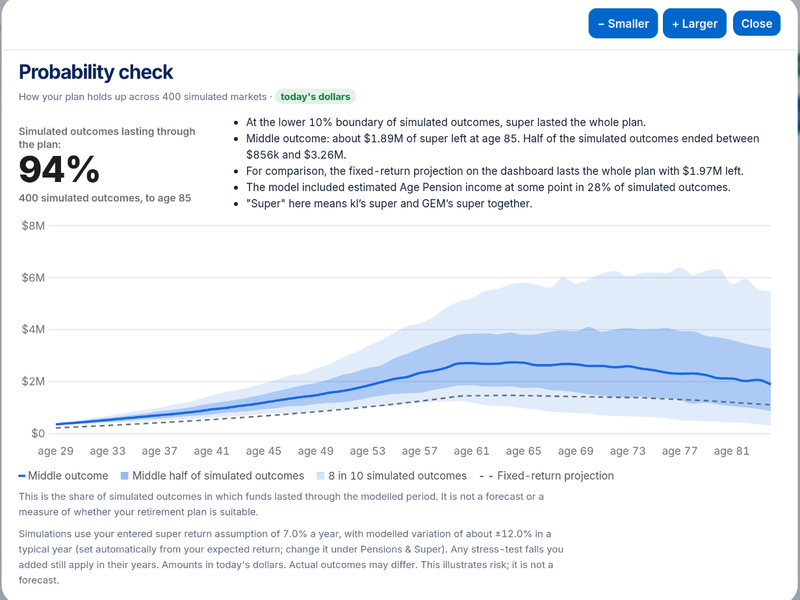
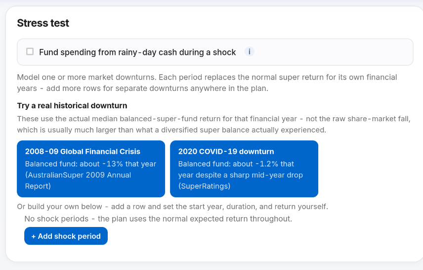
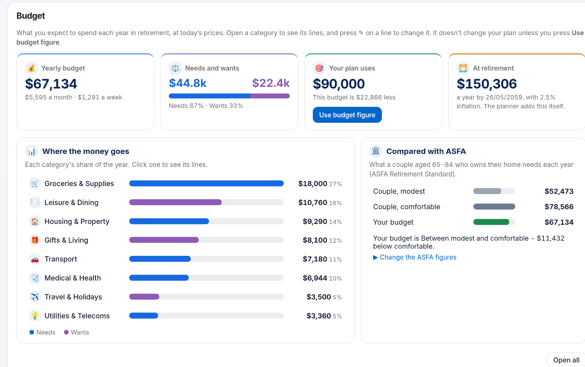

Super & pensions
Model super balances, retirement income and pension sources over time.
Australian retirement planning
Sunnora is a free retirement planner for exploring super, retirement income, spending, Age Pension, mortgage and other income sources over time. Sunnora can also include UK State Pension income alongside super and other pension income in the retirement projection.
Free to download · Runs locally · No subscription

One plan, different parts of retirement
Sunnora combines the information you enter into a date-driven retirement projection, while keeping the different parts of the plan visible.
Model super balances, retirement income and pension sources over time.
Build a yearly budget and compare spending with the broader retirement plan.
Include a linked partner profile in the household forecast.
Include mortgage and debt information alongside the retirement projection.
Your projection
Follow projected account balances through working years and retirement, with retirement timing and household accounts shown together.
The Dashboard also keeps live What if controls alongside the projection so selected assumptions can be explored without immediately changing the saved plan.
Income sources
The annual income view separates projected sources across the plan rather than presenting retirement income as a single number.

Mortgage & debt
Review the projected mortgage path, extra payments, interest and principal, rate assumptions and payoff timing in the Mortgage & Debt Hub.

Explore uncertainty
Sunnora includes tools for exploring simulated market variation and selected downturn assumptions. They illustrate modelled risk; they are not forecasts.

View the share of simulated outcomes in which funds last through the modelled period, together with outcome ranges.

Apply historical-style or custom downturn periods and see how those assumptions affect the plan.
RETIREMENT SPENDING
Start with example categories, adjust them to reflect your own spending, and see the yearly, monthly and weekly picture. Sunnora can also compare your budget with the ASFA Retirement Standard.

Privacy & local operation
Sunnora runs locally on your computer and doesn't require an account. Your financial planning data is stored locally and isn't uploaded to Sunnora.
There is no application advertising, analytics or telemetry. Some optional features use the internet: weather sends the location you choose to Open-Meteo; public benchmark and exchange-rate updates retrieve public information without sending your financial plan. Optional phone/tablet access can make your plan available to devices you authorise and is off by default.
Getting started
Install Sunnora on your own computer.
Use the guided setup to enter the initial information used by the planner.
Move between Simple and Advanced views, projections and What if controls.
Why I built Sunnora
Could I retire earlier than I expected?
Answering that turned out to involve much more than looking at a super balance. I wanted to see how super, pensions, spending, a mortgage and other parts of retirement could fit together over time, and what happened when I changed different assumptions.
Sunnora grew from that personal project. As it developed, I thought it might also be useful to other Australians asking similar questions, so I've made it available as a free download.
Sunnora is an independent personal project. It isn't financial advice and doesn't recommend financial products.
Questions, feedback and suggestions about Sunnora are welcome.
Useful links
Retirement rules and figures change. These Australian resources can help you check current information independently.
External links are provided for convenience and information. Sunnora is not affiliated with or endorsed by the organisations listed above.
Free to download and runs locally on your computer.
1 The macOS build has passed automated build and validation checks, but has not yet been tested on a physical Mac.
No account required · Free download · No subscription
Sunnora is a retirement modelling and educational tool, not financial advice. Results are estimates based on the information and assumptions you enter and are not predictions or guarantees. Sunnora does not recommend financial products or tell you what financial decisions to make. Consider your own circumstances and, where appropriate, seek professional financial, taxation or legal advice.